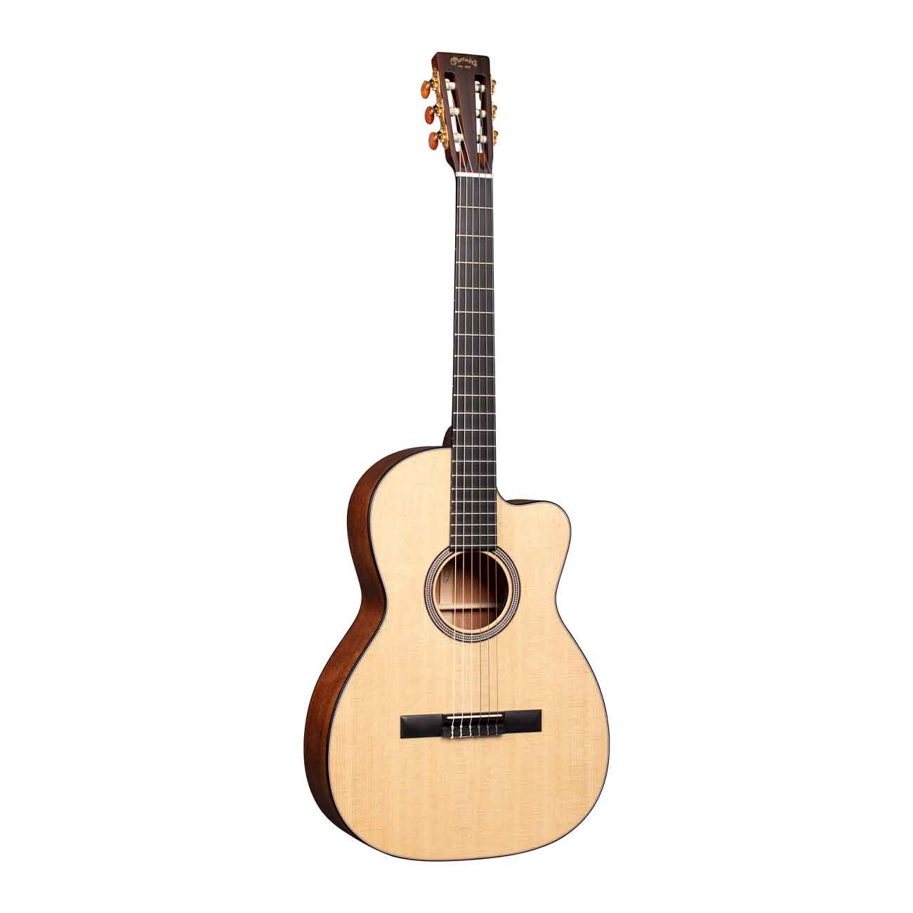
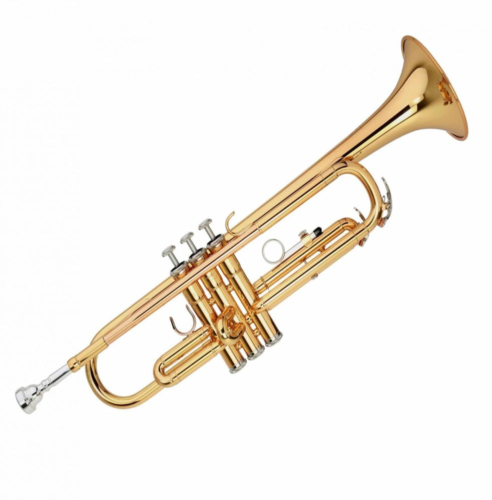

Significado eh historia
Un instrumento musical es un sistema compuesto por la combinación de uno o más sistemas resonantes y medios para su vibración, construido con el fin
de producir sonido en uno o más tonos que puedan ser combinados por un intérprete para producir música. Al final, cualquier cosa que produzca sonido
armónico puede servir de instrumento musical, pero la expresión se reserva, generalmente, a objetos que tienen ese propósito en específico.
Los instrumentos musicales mas antiguos encontrados datan de mas de 50,000 años de antiguedad, esto nos indica que desde tiempos inmemorables
los seres humanos han utilizado instrumentos musicales para comunicarse, expresar sus emociones y contar historias.
| Instrumento | Tipo | Imagen |
|---|---|---|
| Guitarra | Cuerda |  |
| Tambor | Percución |  |
| Trompeta | De aire |  |
Cancion favorita de Heriberto
Angus & Julia Stone - Grizzly Bear

Cancion favorita de Patricio
Fiesta
Es bien sabido que en las fiestas
la musica nunca puede faltar.
Clasica ejemplo
Sabias tu que la cancion del Chavo del 8
es una cancion clasica de Beethoven
llamada "Marcha turca"